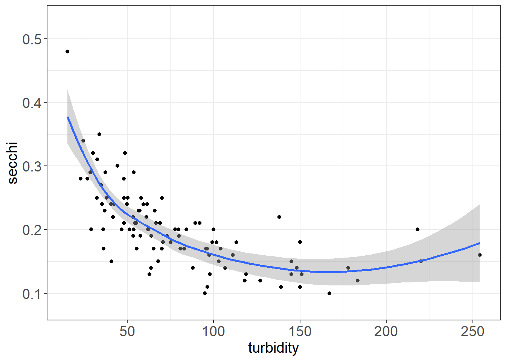

Chapter 9 Data Exploration and QA/QC
9.1 1 Recommended Reference Material
There are probably many references for exploring your data. I don’t necessarily follow any particular reference, but rather try a few different kinds of plots to pull out different aspects of the data. Depending on the analysis you are doing, you will also probably want to do some different kinds of exploration.
Two sources I have used, however, are (Zuur et al. 2009), which includes some steps for data exploration prior to launching into mixed effects modeling (Chapter 2 and Appendix A), and (Wickham and Grolemund 2017), which has some useful information about visualizing data and exploratory data analysis, as well as other information about coding in the tidyverse (see below for description of the tidyverse).
9.2 2 Background
Data exploration often occurs at multiple stages of an analysis. The initial data exploration is important for finding the issues with your data, and for getting an idea of what analyses you can perform. This training will include some examples of plots and code to help you look at the relationships between variables, including:
- Data over time
- Data over space
- Variability of data
- Collinearity
- Distribution of data
- How balanced your data are
- Missing data
- Outliers
I will be conducting the majority of my data exploration using the tidyverse. The tidyverse is a collection of packages that use similar coding language to do things such as filter, reformat, manipulate, plot your code. You can call all the tidyverse packages using library(tidyverse). There are also many ways to conduct data exploration using base R and other packages.
9.3 3 Prepare your data
Load packages
# Clear your environment
rm(list=ls(all=TRUE))
library(readr) # Read in data
library(dplyr) # Manipulate data
library(tidyr) # Pivot data
library(lubridate) # Datetimes
library(plotly) # Interactive plotting
library(psych) # Correlation plots
library(viridis) # Color palettes
library(ODWGtools) # Tukey and MAD tests
library(leaflet) # Interactive maps
library(ggpubr) # dotplot
#source("corvif.R") # From Zuur et al. 2009 for calculating VIFCreate a theme to make font sizes slightly bigger for plots. I have put in an option to rotate the x-axis text when needed (degree = 90 in those cases)
theme_plots <- function(degree = 0) {
theme_bw() +
theme(axis.text.x = element_text(size = 14, angle = degree),
axis.text.y = element_text(size = 14),
axis.title.x = element_text(size = 15),
axis.title.y = element_text(size = 15),
legend.text = element_text(size = 14),
strip.text = element_text(size = 11))
}9.3.1 Get data
Let’s work with DWR’s Yolo Bypass Fish Monitoring Program’s Beach Seine (fish) data, which contains both water quality and fish data.This is available on EDI, but I saved a version of it for the training. Here is code below if you want to read the whole dataset from EDI.
# Get URLs from EDI
# URL_fish <- "https://portal.edirepository.org/nis/dataviewer?packageid=edi.233.2&entityid=015e494911cf35c90089ced5a3127334"
# Read in data
# fishData <- readr::read_csv(URL_fish,show_col_types = FALSE)%>%
# dplyr::filter(MethodCode == "BSEIN")
# Write data
# saveRDS(fishData, "ybfmp_fishdata.rds")Start here if data are already downloaded.
# Read data
fishData <- readRDS("data/ybfmp_fishdata.rds")9.3.2 Develop your questions
Before you explore, you may want to think about what your analysis questions will be to help you set up your data properly.
- What is/are your response variable(s)?
- What is/are your predictor variable(s)?
You will likely need to do some data manipulation to get your data into the format you want for your questions. You can explore the data to figure out if it’s already set up correctly, or if you need to manipulate it to be analyzing correctly.
For examples, let’s say your question is: Is native fish abundance correlated with space, time, and water quality? You’ll want to have the appropriate time, space, abundance metrics.
Take a look at how R is seeing the data. It is important to make sure the “class” (e.g. character, factor double, logical, datetime) is correct when you analyze your data, otherwise you may run into errors:
glimpse(fishData)## Rows: 87,295
## Columns: 32
## $ SampleDate <chr> "1/16/1998", "1/16/1998", "1/30/1998", "1/30/1998~
## $ SampleTime <time> 14:05:00, 15:00:00, 13:50:00, 13:50:00, 13:50:00~
## $ StationCode <chr> "YB", "YB", "YB", "YB", "YB", "YB", "YB", "YB", "~
## $ MethodCode <chr> "BSEIN", "BSEIN", "BSEIN", "BSEIN", "BSEIN", "BSE~
## $ GearID <chr> "SEIN50", "SEIN50", "SEIN50", "SEIN50", "SEIN50",~
## $ CommonName <chr> "Threadfin Shad", "Inland Silverside", "Inland Si~
## $ GeneticallyConfirmed <chr> "No", "No", "No", "No", "No", "No", "No", "No", "~
## $ GeneticID <lgl> NA, NA, NA, NA, NA, NA, NA, NA, NA, NA, NA, NA, N~
## $ Field_ID_CommonName <chr> "Threadfin Shad", "Inland Silverside", "Inland Si~
## $ ForkLength <dbl> 90, 73, 56, 59, 39, 50, 37, 40, 49, 50, 22, 81, 4~
## $ Count <dbl> 1, 1, 1, 2, 2, 1, 1, 2, 2, 1, 1, 1, 3, 1, 1, 1, 1~
## $ FishSex <chr> NA, NA, NA, NA, NA, NA, NA, NA, NA, NA, NA, NA, N~
## $ Race <chr> "n/p", "n/p", "n/p", "n/p", "F", "n/p", "n/p", "n~
## $ MarkCode <chr> "n/p", "n/p", "n/p", "n/p", "n/p", "n/p", "n/p", ~
## $ CWTSample <lgl> FALSE, FALSE, FALSE, FALSE, FALSE, FALSE, FALSE, ~
## $ FishTagID <chr> NA, NA, NA, NA, NA, NA, NA, NA, NA, NA, NA, NA, N~
## $ StageCode <chr> "n/p", "n/p", "n/p", "n/p", "CHN_P", "n/p", "n/p"~
## $ Dead <chr> "No", "No", "No", "No", "No", "No", "No", "No", "~
## $ GearConditionCode <dbl> 3, 3, 1, 1, 1, 1, 1, 1, 1, 1, 1, 1, 1, 2, 1, 1, 1~
## $ WeatherCode <chr> "CLD", "CLD", "CLD", "CLD", "CLD", "CLD", "CLD", ~
## $ WaterTemperature <dbl> 11.66667, 11.66667, 12.22222, 12.22222, 12.22222,~
## $ Secchi <dbl> NA, NA, NA, NA, NA, NA, NA, NA, NA, NA, NA, NA, N~
## $ Conductivity <dbl> NA, NA, NA, NA, NA, NA, NA, NA, NA, NA, NA, NA, N~
## $ SpCnd <dbl> NA, NA, NA, NA, NA, NA, NA, NA, NA, NA, NA, NA, N~
## $ DO <dbl> NA, NA, NA, NA, NA, NA, NA, NA, NA, NA, NA, NA, N~
## $ pH <dbl> NA, NA, NA, NA, NA, NA, NA, NA, NA, NA, NA, NA, N~
## $ Turbidity <dbl> NA, NA, NA, NA, NA, NA, NA, NA, NA, NA, NA, NA, N~
## $ SubstrateCode <chr> "VG", "MD", "PV", "PV", "PV", "PV", "PV", "PV", "~
## $ Tide <chr> NA, NA, NA, NA, NA, NA, NA, NA, NA, NA, NA, NA, N~
## $ VolumeSeined <dbl> NA, NA, NA, NA, NA, NA, NA, NA, NA, NA, NA, NA, N~
## $ Latitude <dbl> 38.56538, 38.56538, 38.56538, 38.56538, 38.56538,~
## $ Longitude <dbl> -121.631, -121.631, -121.631, -121.631, -121.631,~head(fishData)## # A tibble: 6 x 32
## SampleDate SampleTime StationCode MethodCode GearID CommonName
## <chr> <time> <chr> <chr> <chr> <chr>
## 1 1/16/1998 14:05 YB BSEIN SEIN50 Threadfin Shad
## 2 1/16/1998 15:00 YB BSEIN SEIN50 Inland Silverside
## 3 1/30/1998 13:50 YB BSEIN SEIN50 Inland Silverside
## 4 1/30/1998 13:50 YB BSEIN SEIN50 Inland Silverside
## 5 1/30/1998 13:50 YB BSEIN SEIN50 Chinook Salmon
## 6 1/30/1998 13:50 YB BSEIN SEIN50 Inland Silverside
## # ... with 26 more variables: GeneticallyConfirmed <chr>, GeneticID <lgl>,
## # Field_ID_CommonName <chr>, ForkLength <dbl>, Count <dbl>, FishSex <chr>,
## # Race <chr>, MarkCode <chr>, CWTSample <lgl>, FishTagID <chr>,
## # StageCode <chr>, Dead <chr>, GearConditionCode <dbl>, WeatherCode <chr>,
## # WaterTemperature <dbl>, Secchi <dbl>, Conductivity <dbl>, SpCnd <dbl>,
## # DO <dbl>, pH <dbl>, Turbidity <dbl>, SubstrateCode <chr>, Tide <chr>,
## # VolumeSeined <dbl>, Latitude <dbl>, Longitude <dbl>- Response variable: Native fish CPUE
- Filter to relevant species, calculate daily CPUE (data currently by count, and broken up by species)
- Predictor variables: Water Year, Month, WQ, Station:
- You will want to extract datetime variables
- Filter to stations of interest
9.3.3 Manipulate data
Here you will see me use
%>%fairly often. This is called a pipe and basically will allow you to continue running operations on the data frame called at the beginning, and let you avoid having to name multiple intermediate data frames. Below, I create a new data framefishSeinethat is based on the existing data framefishData. Then I add/edit variables usingmutate, filter data usingfilter, and select columns I don’t want usingselect. See more about pipes and data manipulation functions in Wickham & Grolemund 2017, Chapter 5.
Add some datetime variables, make sure they are the right class. Filter beach seine data from 2010-2015.
fishSeine <- fishData %>%
#Calculate CPUE, add datetime variables
mutate(CPUE = Count/VolumeSeined,
Date = lubridate::mdy(SampleDate),
Datetime = paste(Date, SampleTime),
Datetime = lubridate::ymd_hms(Datetime),
Year = lubridate::year(Date),
fYear = factor(Year),
Month = lubridate::month(Date),
fMonth = factor(Month),
WY = ifelse(Month >9, Year + 1, Year),
fWY = factor(WY))%>%
# Remove samples in bad condition, filter to a smaller timespan and station list
filter(GearConditionCode <3,
Year>2009 & Year<2016)%>%
# Remove variables not needed
select(-SampleTime, -SampleDate, -GearID, -GearConditionCode,
-MethodCode, -ForkLength,
-GeneticallyConfirmed, -GeneticID, -Field_ID_CommonName, -FishSex,
-MarkCode, -CWTSample, -StageCode, -Dead, -FishTagID, -Race,
-SubstrateCode)Take a look at how the fish data are set up.
- For this dataset, only a certain number of fish are measured and the rest are counted. We want just one count per day, so this is done here.
- Many datasets only report on what they have caught, and not which species have not been caught. This can skew the CPUE if you are looking at averages by species. Here we fill in zeroes for species not caught.
# Some more that needs to be done to fish counts
fishSeineC <- fishSeine %>%
# Sum to one count per species per datetime and station
# (data not formatted this way since some fish have lengths and others do not)
group_by(StationCode, Datetime, CommonName) %>%
mutate(Count2 = sum(Count),
CPUE2 = sum(CPUE),
Volume2 = sum(VolumeSeined)) %>%
ungroup() %>%
select(-Count, -CPUE, -VolumeSeined) %>%
distinct() %>%
rename(Count = Count2, CPUE = CPUE2, VolumeSeined = Volume2) %>%
arrange(CommonName) %>%
# Add zeroes in
pivot_wider(names_from = CommonName, values_from = CPUE,values_fill = 0L) %>%
janitor::clean_names(., case = "lower_camel") %>%
select(-noCatch) %>%
pivot_longer(cols = c(americanShad:yellowfinGoby),
names_to = "commonName", values_to = "cpue") Let’s reduce to just a few stations for now.
# Filter out stations of interest
fishSeineS <- fishSeineC %>%
filter(stationCode %in% c("AL2","LI", "BL2", "BL4"))Create native species subset of data.
nativespecies <- c("chinookSalmon", "splittail", "sacramentoBlackfish",
"sacramentoPikeminnow", "sacramentoSucker", "hardhead",
"tulePerch", "hitch")
fishNative <- filter(fishSeineS, commonName %in% nativespecies)Let’s just have one CPUE for all fish per day.
- native fish of interest
- all fish
# Filter to some natives
fishCPUE_n <- fishNative %>%
group_by(stationCode, date, year, fWy, fMonth) %>%
summarize(sumCPUE = sum(cpue)) %>%
ungroup()
# All fish
fishCPUE <- fishSeineS %>%
group_by(stationCode, date, year, fWy, fMonth) %>%
summarize(sumCPUE = sum(cpue)) %>%
ungroup()Daily native fish CPUE for all stations (for spatial data examples)
fishSeineNatives <- fishSeineC %>%
filter(commonName %in% nativespecies) %>%
group_by(wy, date, stationCode, latitude, longitude) %>%
summarize(sumCPUE = sum(cpue)) %>%
filter(wy>2011 & wy<2015) %>%
mutate(fWy = factor(wy),
fMonth = factor(month(date)))
fishAnnualNatives <- fishSeineNatives %>%
group_by(fWy, stationCode, latitude, longitude) %>%
summarize(sumcpue = sum(sumCPUE),
n = n())Let’s also separate water quality so we can look at these variables for outliers. I like to put my data in long (all parameters in one column, all values in one column) to look at lots of different variables at the same time.
fish_WQ <- fishSeineS %>%
select(date, year, fWy, fMonth, stationCode, waterTemperature,
conductivity, do, pH, secchi, turbidity, latitude, longitude) %>%
distinct() %>%
mutate(samplingId = 1:nrow(.))
WQ_long <- pivot_longer(fish_WQ, cols = waterTemperature:turbidity,
names_to = "parameter",
values_to = "value") %>%
mutate(index = 1:nrow(.))
head(WQ_long %>%select(date, parameter, value), 10)## # A tibble: 10 x 3
## date parameter value
## <date> <chr> <dbl>
## 1 2010-07-28 waterTemperature 27.2
## 2 2010-07-28 conductivity 358
## 3 2010-07-28 do 8.64
## 4 2010-07-28 pH 8.12
## 5 2010-07-28 secchi 0.140
## 6 2010-07-28 turbidity NA
## 7 2011-07-12 waterTemperature 23.3
## 8 2011-07-12 conductivity 587
## 9 2011-07-12 do 6.33
## 10 2011-07-12 pH 8.32Combine summed CPUE data with variables.
vars <- left_join(fishCPUE, fish_WQ) %>%
select(fWy, fMonth, date, stationCode,
sumCPUE, waterTemperature, conductivity,
turbidity, secchi, do, pH, latitude, longitude)9.4 4 Examine patterns and relationships between response and predictor
We can use tables and plots to look at the data in different ways, and gather different types of information about your data and data structure. Grouping by different variables will help you identify outliers, gaps, and learn about your data.
9.4.1 A) Data over time
Dotplots plot your data by row, which usually means it is plotted in order of time. This can be useful for finding outliers.
dotchart(vars$sumCPUE, bg = "springgreen4")You can also group by station (though so many values, it is hard to see)
dotchart(vars$sumCPUE, labels = vars$stationCode,
groups = vars$longitude,
bg = viridis(4, option = "magma"))
Point plots basically flip this, and it is easy to color code by different variables. You can do this by date label. Here I have also added some lines at the beginning of each water year to help split the plot up.
(Seine_pointplots <- vars %>%
ggplot(aes(x= date, y = sumCPUE, color = stationCode)) +
geom_point() +
geom_vline(xintercept = as.Date("2010-10-01"), linetype = "dashed") +
geom_vline(xintercept = as.Date("2011-10-01"), linetype = "dashed") +
geom_vline(xintercept = as.Date("2012-10-01"), linetype = "dashed") +
geom_vline(xintercept = as.Date("2013-10-01"), linetype = "dashed") +
geom_vline(xintercept = as.Date("2014-10-01"), linetype = "dashed") +
geom_vline(xintercept = as.Date("2015-10-01"), linetype = "dashed") +
viridis::scale_color_viridis(discrete = TRUE, option = "turbo") +
scale_x_date(breaks = "6 months") +
theme_plots(90))9.4.2 B) Data over space
If you have a lot of stations, it can be good to check your latitudes and longitudes are correct, get an idea of the area of the dataset, how you might want to divide up regions, etc., as well as a quick look at spatial trends, if that is one of your questions.
Create a data frame of stations.
stations <- fishSeineNatives %>%
select(stationCode, longitude, latitude, sumCPUE) %>%
group_by(stationCode, longitude, latitude) %>%
filter(sumCPUE !=0) %>%
slice(1) %>% # just picking one value per
#station for this exercise.
#slice picks the first value
# for each station-lon-lat combo.
mutate(sumCPUE = round(sumCPUE,3))
# round CPUE so it's not a crazy long number
# when it pops up on leaflet.I am going to use the leaflet package here, which allows you to view your stations interactively. You can also view data associated with the station by using colors or size to visualize different variables.
# Define your color palette by telling it what colors
# to use for which variable. You will need one color per level.
pal <- colorFactor(viridis::turbo(13), stations$stationCode)
# Make map
stations %>%
leaflet() %>% # call leaflet.
addTiles() %>% # this adds the map in the background.
addCircleMarkers(
color = ~pal(stationCode),
stroke = FALSE, # alters whether there is a border to circle
fillOpacity = 0.9,
radius = ~sumCPUE*400,
lng = ~longitude, # call your longitude column name
lat = ~latitude, # call you latitude column name
label = ~paste(stationCode,
" sumCPUE:", sumCPUE,
"Lat:", latitude, "Long:", longitude)) %>%
# edit what you want to show up in your label
addLegend(pal = pal,
values = ~stationCode,
position = "bottomright")You can also look at some patterns in the data in ggplot. Here you might note that certain stations have greater CPUE across years while others fluctuate, and also that stations are not all sampled each year.
ggplot(fishAnnualNatives, aes(longitude, latitude,
size = sumcpue, color = stationCode),
alpha = 0.5) +
geom_jitter() +
facet_wrap(~fWy) +
scale_colour_viridis(option = "turbo", discrete = TRUE)+
theme_plots(90) +
theme(legend.text = element_text(size = 8)) +
guides(colour = guide_legend(ncol = 3, byrow = T),
size = guide_legend(ncol = 2))9.4.3 C) Variability of data and continuous-categorical relationships
We can use boxplots to look at the variability of your continuous data by categorical variables, and also to identify major outliers.
9.4.3.1 By Station
(Seine_boxplot <- WQ_long %>%
ggplot(aes(x= stationCode, y = value, fill = stationCode)) +
geom_boxplot() +
facet_wrap(~parameter, scales = "free") +
viridis::scale_fill_viridis(discrete = TRUE, option = "turbo") +
theme_plots(90))
9.4.3.2 By Water Year
You might notice some different outliers when you look by year. You may also note some trends.
(Seine_boxplots_WY <- WQ_long %>%
ggplot(aes(x= fWy, y = value, fill = fWy)) + geom_boxplot() +
facet_wrap(~parameter, scales = "free") +
viridis::scale_fill_viridis(discrete = TRUE, option = "turbo") +
theme_plots(90))
9.4.3.3 By Station and Water Year
(Seine_boxplots_month <- WQ_long %>%
ggplot(aes(x= fWy, y = value, fill = stationCode)) + geom_boxplot() +
facet_wrap(~parameter, scales = "free") +
viridis::scale_fill_viridis(discrete = TRUE, option = "turbo") +
theme_plots(90))Boxplots are less useful for data with lots of zeroes, but can still pull out outliers. You could also plot fork length to look for outliers.
(Fish_boxplots <- fishSeineNatives %>%
ggplot(aes(x= factor(wy), y = sumCPUE, fill = factor(wy))) +
geom_boxplot() +
viridis::scale_fill_viridis(discrete = TRUE, option = "turbo") +
theme_plots(90))9.4.4 D) Collinearity and relationships between continuous variables
Scatterplots are useful to look at relationships between continuous variables. These plots are useful: 1) to help you find outliers in variables that should be correlated 2) to help you see relationships that might be interesting to explore 3) to help determine whether certain variables may need to be removed for your model
9.4.4.1 Outlier detection
Turbidity and Secchi, DO and Water Temperature should be correlated
ggplot(vars,aes(turbidity, secchi)) + geom_point() + geom_smooth() + theme_plots()
ggplot(vars,aes(do, waterTemperature)) + geom_point() + geom_smooth(method = "lm") + theme_plots()ggplot(vars,aes(do, waterTemperature)) +
geom_point() +
geom_smooth(method = "lm") + facet_wrap(~stationCode) + theme_plots() Some possible outliers or strange things happening with the high do/high water temperature values at AL2
Some possible outliers or strange things happening with the high do/high water temperature values at AL2
9.4.4.2 Pairplots
Pairplots and correlation coefficients are useful for identifying collinearity (variables that are correlated with each other)
vars_filt <- vars %>% select(sumCPUE, waterTemperature,
conductivity, secchi,
turbidity, pH, do)
(corr_plot <- pairs.panels(vars_filt,
hist.col = "white",
cex.cor = 1,
pch = 21, stars = TRUE))## NULL9.4.4.3 Variance Inflation Factor (VIF)
VIF is another way to assess collinearity. This value indicates the ratio of variance in the entire model to the variance for a model with each individual variable. Higher vif indicates greater collinearity. If values are below 3, they are acceptable to be included together in a model. If values are above 3, Zuur et al. 2010 recommends sequentially removing variables with vif>3 until all values are below 3. Other sources may have other cutoffs, and you may make your own determinations for what to include in a model.
You can assess vif on a model using car::vif(). You can also run this corvif function (Zuur et al. 2009), which has been included as a separate file, or is available here: corvif function. Since we have not specified a model, I have used this function, which basically models the data in a linear model and calculates the vif.
#corvif(vars_filt[,-1])9.4.5 E) Distribution of data
We can use histograms to look at the distribution of the data, and can also find outliers this way.
Here are some examples of distributions as a reference:

Probability Distributions, from Rasmus 2018
Let’s take a look at the distribution of native fishes vs. all fish.
ggplot(fishCPUE_n, aes(sumCPUE)) + geom_histogram(binwidth = 0.1) +
labs(title = "Native Fish") + theme_plots()ggplot(fishCPUE, aes(sumCPUE)) + geom_histogram(binwidth = 0.1) +
labs(title = "All Fish") + theme_plots()You can also look at a histogram of sorts over multiple categories using a freqpoly plot.
ggplot(fishCPUE, aes(sumCPUE, color = stationCode)) +
geom_freqpoly(binwidth = 0.5) + labs(title = "All Fish by Station") + theme_plots()Here you can see that there are a lot of zeroes in the data, especially for the native fishes. This can inform the type of model you will likely use down the line (e.g. zero-inflated poisson or negative binomial modeling)
ggplot(WQ_long, aes(value)) +
geom_histogram(color = "navyblue", fill = "steelblue4") +
facet_wrap(~parameter, scales = "free") + theme_plots()The distributions of the water quality data are quite different, some of them being normally distributed (e.g. do, pH), some of them being right-skewed (secchi, turbidity), some being left-skewed (waterTemperature), but none being quite as skewed as the fish data.
When you analyze your data, you may want to transform and/or standardize some of your response or predictor variables, depending on the analysis. Transformations may help make your data normal, which would allow you to use several parametric analyses.
See transformed turbidity below.
par(mfrow = c(1,2))
hist(fish_WQ$turbidity, main = "Turbidity")
hist(log(fish_WQ$turbidity), main = "Log-transformed Turbidity", col = "steelblue4")9.4.6 F) How balanced are your data?
Often you want to have a balanced design (similar number of samples across treatments). Thus, it is useful to look at how your sample numbers are distributed across treatments.
fishCPUE %>%
count(stationCode)## # A tibble: 4 x 2
## stationCode n
## <chr> <int>
## 1 AL2 119
## 2 BL2 122
## 3 BL4 126
## 4 LI 28There is much less data in LI. You may look to see in metadata or datasheets whether this should be the case.
You can also look at this visually - note not all stations measured the same each year
lessSta <- fishAnnualNatives %>% filter(!stationCode %in% c("AL2", "AL4", "BL2", "BL4"))
ggplot(lessSta, aes(longitude, latitude,
size = n, fill = stationCode))+
geom_point(alpha = 0.9, shape = 21, color = "black") +
facet_wrap(~fWy) +
scale_fill_viridis(option = "turbo", discrete = TRUE) +
theme_plots(90) +
theme(legend.text = element_text(size = 8)) +
guides(fill = guide_legend(ncol = 2, byrow = T),
size = guide_legend(ncol = 2))9.4.7 G) Are there missing data?
A tile plot can be useful in identifying gaps in data.
samples <- vars %>%
group_by(stationCode, fWy, fMonth) %>%
summarize(n = n())
ggplot(samples, aes(x = fWy, y = fMonth, fill = n)) + geom_tile() +
facet_wrap(~stationCode) + theme_plots(90)LI does not have data in later years, there are some missing months that might need to be checked.
9.5 5 Identifying Outliers
You could spend an entire lesson on QA/QC and outlier detection. In fact we have an entire working group at DWR dedicated to providing recommendations for outlier detection.
I will just provide here some simple outlier tests here. I usually do a scan of the data (as in plots above), in addition to running some tests.
To visually identify outliers to flag I like using a combination of the package plotly and point plots. With plotly, you can hover over points that are questionable to get more information on that point. You can change what shows up in the hover by editing the text option in your ggplot() call. It is very easy to use plotly, as you can just create your plot, then use ggplotly(nameofplot) to turn it into an interactive plot.
Make normal plot.
(Seine_pointplots <- WQ_long %>%
ggplot(aes(x= date, y = value,
color = stationCode,
text = paste("index:", index, "samplingID:", samplingId))) +
geom_point(size = 0.5) +
facet_wrap(~parameter, scales = "free") +
viridis::scale_color_viridis(discrete = TRUE, option = "turbo") +
theme_plots(90))Use plotly to hover over variables (see R script)
ggplotly(Seine_pointplots)There isn’t anything too alarming here, but you might take a look at the pH swings happening in 2012 that might indicate pH sensor malfunction. You can identify the index by hovering or filter out values that are below or above certain thresholds and check these against your initial data source
pH_flagID <- WQ_long %>%
filter(parameter == "pH" & (value <7.5 | value>9.1))
head(pH_flagID)## # A tibble: 6 x 11
## date year fWy fMonth stationCode latitude longitude samplingId
## <date> <dbl> <fct> <fct> <chr> <dbl> <dbl> <int>
## 1 2015-07-09 2015 2015 7 BL4 38.4 -122. 14
## 2 2010-01-04 2010 2010 1 LI 38.5 -122. 18
## 3 2010-04-07 2010 2010 4 LI 38.5 -122. 21
## 4 2010-09-15 2010 2010 9 BL4 38.4 -122. 28
## 5 2010-09-15 2010 2010 9 BL2 38.4 -122. 29
## 6 2010-09-30 2010 2010 9 AL2 38.5 -122. 30
## # ... with 3 more variables: parameter <chr>, value <dbl>, index <int>You can also use a Cleveland dotplot to identify the range of values and whether there are obvious outliers.
vars_filt$index = row.names(vars_filt)
ggdotchart(data = vars_filt,
x= "index",
y = "sumCPUE",
rotate = T)9.5.1 A) Tukey Outliers
These are how boxplots, and also Tukey test outliers, are identified.

Boxplot outliers, from Grolemund & Wickham 2017
9.5.2 B) Median Absolute Deviation Outliers
The median absolute deviation is similar to a z-score, but centering calculations around the median rather than the mean for less bias of very high or low values.
- d = Calculate the deviation between xi - median(x)
- med_d = median(d)
- mad = med_d * 1.4826
- scores_d = d/mad
- If scores_d > 1.5, it is considered an outlier. This is similar to the number of standard deviations greater than the mean.
9.5.3 C) Run outlier tests
DWR has an Outlier Detection Working Group that has coded a few outlier tests. To install, run the code below:
install.packages("remotes")
remotes::install_github("ODWG/ODWGtools")
library(ODWGtools)outliers <- WQ_long %>%
group_by(parameter) %>%
mutate(MAD = ODWGtools::outlier_mad(value),
Tukey = ODWGtools::outlier_tukey(value)) %>%
mutate(MAD = ifelse(is.na(MAD), "not outlier", as.character(MAD)),
Tukey = ifelse(is.na(Tukey), "not outlier", as.character(Tukey)) )
head(outliers %>% select(date, value, MAD, Tukey))## # A tibble: 6 x 5
## # Groups: parameter [6]
## parameter date value MAD Tukey
## <chr> <date> <dbl> <chr> <chr>
## 1 waterTemperature 2010-07-28 27.2 not outlier not outlier
## 2 conductivity 2010-07-28 358 not outlier not outlier
## 3 do 2010-07-28 8.64 not outlier not outlier
## 4 pH 2010-07-28 8.12 not outlier not outlier
## 5 secchi 2010-07-28 0.140 not outlier not outlier
## 6 turbidity 2010-07-28 NA not outlier not outlierYou can use the output to decide on flags.
Sometimes these tests can be too sensitive, but it is a quantitative way to determine outliers.
ggplot(outliers) +
geom_point(aes(x = date, y = value, color = Tukey, shape = MAD)) +
facet_wrap(~parameter, scales = "free") +
scale_color_viridis(discrete = TRUE, option = "turbo") +
theme_plots(90)9.5.4 D) Treatment of outliers
Some options once you find outliers is to:
- Flag them and leave data as is (e.g. 1 = acceptable, 2 = suspicious, 3 = highly suspicious) - useful if you are providing data for others
If you are analyzing data you will want to then either:
- Remove outliers (replace with NA)
- Replace outliers (with a mean, with data from another source, with interpolated value, with value before or after)
9.6 6 Other QA/QC
Some other things you might want to check are:
Variable names and factor levels are consistent (sometimes there is a mis-spelling or wrong case that creates an extra level in your factor)
Values are within absolute ranges or thresholds (e.g. in a given system, you probably have an approximation of minimum and maximum reasonable temperatures.)
Check zeros to make sure they are accurate, and not defaulted for an NA or blank entry.
For outlier detection with continuous data, check out other tests in
ODWGTools, NOAA manuals at IOOS Site, or reach out to the Outlier Detection Working Group for more guidance.
9.7 7 References
- Grolemund, G., & Wickham, H. (2017). R for Data Science. O’Reilly Media. https://r4ds.had.co.nz/index.html
- Interagency Ecological Program (IEP), B. Schreier, B. Davis, and N. Ikemiyagi. 2019. Interagency Ecological Program: Fish catch and water quality data from the Sacramento River floodplain and tidal slough, collected by the Yolo Bypass Fish Monitoring Program, 1998-2018. ver 2. Environmental Data Initiative. https://doi.org/10.6073/pasta/b0b15aef7f3b52d2c5adc10004c05a6f (Accessed 2022-02-28).
- Rasmus, B. Distribution_diagrams (2018). GitHub Repository. https://github.com/rasmusab/distribution_diagrams)
- Qartod* Zuur A.F., Ieno E.N., Walker N.J., Saveliev A.A, Smith G.M. (2009). Mixed Effects Models and Extensions in Ecology with R.
- Zuur A.F., Ieno E.N., Elphick C.S. (2010). A protocol for data exploration to avoid common statistical problems. Methods in Ecology and Evolution (1 (1), 3-14). https://doi.org/10.1111/j.2041-210X.2009.00001.x